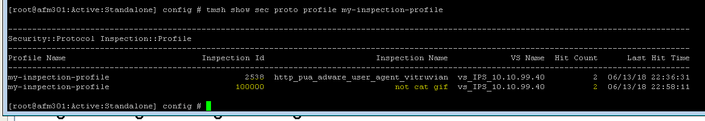

F5 Firewall Solutions > 2. Advanced Multi-Layer Firewall Protection > 2.3. Module 3: AFM Protocol Inspection IPS Source | Edit on
2.3.4. Lab 4: Protocol Inspection - Custom Signatures¶
Estimated completion time: 15 minutes
You can write custom signatures using a subset of the Snort® rules language. We’ll walk through a couple of examples, but the intent is not to make you an expert. At most we can give you a head start in developing expertise. We’ll start with a scenario: we want to detect sessions requesting a particular URI, /images/cat.gif where the User-Agent is “Attack-Bot-2000” When working with signatures, keep in mind there are just under 1600 signatures shipping with 13.1.0. It will be easier to work with custom signatures if you add a filter for them.
2.3.4.1. Task 1: Set Filter¶
- Edit the Inspection Profile ‘my-inspection-profile’ Click ‘Add Filter’ and select ‘User Defined’
- When the User Defined filter is added, select ‘yes’

2.3.4.2. Task 2: Cargo Cult Signature Authoring - finding an example to copy¶
It’s often more pragmatic to modify an example that is close to what we want than to start from scratch. Let’s start with a very simple example.
From the BIG-IP command line, issue the following command:
grep 1189 /defaults/ips_snort_signatures.txt
Expected output:
alert tcp any any -> any any (content:”/rksh”; fast_pattern:only; http_uri; sig_id:1189;)
Parsing this, there is a Header section and an Options section. The Header is the stuff outside the parenthesis:
alert means “match” or “do something.” The BIG-IP/AFM Inspection Policy will actually determine what is done with a packet that matches a signature, so it doesn’t matter which action you choose. For the greatest clarity, standardize on “alert” so you don’t confuse others or yourself.
tcp is the L4 protocol. The Signature has a Protocol setting outside the signature definition. They should probably agree, don’t you think?
any any -> any any means “FROM any source IP+port TO any destination IP+port.” We will tighten this up in a later lab procedure. Note that the signature has its own direction outside the signature definition. We probably want to avoid a conflict between these direction settings.
The Options are the elements inside the parenthesis. Each option is a Type: value pair, separated by a colon. Each Option is separated by a semicolon. The options in this example are:
- content - This is the pattern to match, in this case “/rksh.”
- fast_pattern - applies to the previous content definition. It’s intended to be used to prequalify a rule for further processing. If you have a bunch of expensive content checks, you can look for one characteristic string to see if you need to bother with the others. In this example the effective meaning is “If you see this, look into the other content to see if we match” but there’s no other content! The key takeaway is that the rules provided are not optimized. We’ll try to do better when we create our own.
- http_uri - also applies to the previous content definition. It restricts the search to the HTTP Uniform Resource Identifier.
- sig_id - the signature id
2.3.4.3. Task 3: Adapting our example in creating a custom signature¶
We’re going to run into a problem that stems from MCPD parsing the contents of /defaults/ips_snort_signatures.txt differently than the UI parses custom signatures.
- Create a new custom signature. Navigate to Security > Protocol Security > Inspection List and click “New Signature”

- Enter the following:
a.Name - this is an odd field in that it doesn’t show up in the Signatures page but it is the object name in the config.
Enter “no cat gif”
- Description - this does show up in the Signatures page, Event Logs, tmsh show output, etc. Make it descriptive, systematic, and concise. Enter “HTTP cat.gif request”
- Signature Definition - here’s the big one. Based on our example, enter:
alert tcp any any -> any 80 (content:cat.gif;http_uri; sig_id:100000;)
This simply swaps the content URI string to match and provides a new signature ID.
- Click “Create.” We expect configuration validation to succeed.
From the Signatures page, open your new signature up for editing to add the rest of the signature elements.
- Direction: to Server (agreeing with our signature definition)
- Protocol: TCP (agreeing with our signature definition)
- Attack type - “cat gifs”
- Service - select HTTP
- Click “Save”

- Add this signature to the Inspection Profile my-inspection-profile
- Navigate to Security > Protocol Security > Inspection Profiles > my-inspectionprofile
- Select your new signature, 100000, and when the “Edit Inspections” window pops open, set “Action” to “Reject” and click “Apply” (“Enable” and Log: Yes are selected by default.)


- Click “Commit Changes to Profile”
- Test it out.
- From the Desktop terminal, use the following command:
curl -A test http://10.10.99.40/cat.gif
{kind=link}
- Check stats. From the BIG-IP command line:
tmsh show sec proto profile my-inspection-profile
We expect to see a Hit Count of 1 for Inspection ID 100000.

Note
This completes Module 4 - Lab 4